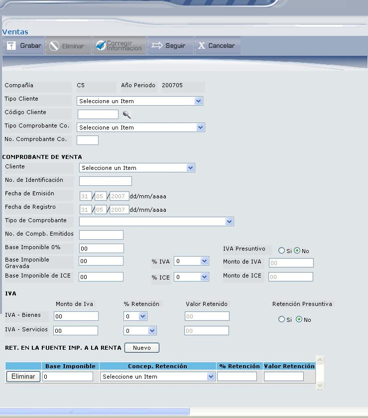

Ventas
Esta opción permite trabajar con la información de Ventas. La gestión es similar a las compras. La pantalla que despliega es la que muestra la Figura 3.29. En el Módulo de Ventas se pueden ingresar las ventas separadas de las retenciones.
Compañía:
Seleccione la compañía de la cual desea consultar o ingresar un nuevo registro de ventas.
Año Periodo:
Seleccione el año y periodo en que se registró el comprobante que desea consultar o el comprobante que desea crear.
Figura 3. Listado de Ventas.
BOTONES
El resultado de la consulta de las transacciones de venta se presenta en la Figura 3.30.
Figura 3. Resultado de la consulta de Ventas.
Para seleccionar la transacción de Venta que desea actualizar de clic en el vínculo Select, se desplegará el detalle del registro de Venta con sus campos protegidos, deberá presionar el botón CORREGIR INFORMACIÓN, para poder modificar.


Figura 3. Reporte de Ventas.

Figura 3. Nuevo registro de Venta.
Compañía:
Despliega el código de la compañía, el año y el periodo en el que se registra la venta.
Tipo Cliente:
Seleccione el tipo de cliente o agente de retención que desea registrar.
Código Cliente:
Seleccione el Cliente o agente de retención presionando el icono ().
Tipo Comprobante Co.:
Seleccione el tipo de comprobante contable que va a utilizar parar registrar la venta.
No. Comprobante Co.:
Digite el número de Comprobante contable que está registrando.
COMPROBANTE DE VENTA
Cliente:
Despliega el tipo de identificación del cliente o agente de retención.
No. de Identificación:
Despliega el número de identificación del cliente o agente de retención, esto ocurre cuando se ha seleccionado el código del cliente.
Fecha de Emisión (Comprobante de Venta):
Despliega la fecha de emisión del comprobante, que corresponde a la última fecha del periodo del comprobante. Es decir el último día del mes que informa, porque las ventas se reportan de forma acumulada por cliente y por mes.
Fecha de Registro (Comprobante de Venta):
Corresponde al último día del mes que contabiliza y declara, porque las ventas se reportan de forma acumulada por cliente y por mes.
Tipo de Comprobante:
Seleccione el tipo de comprobante utilizado en la transacción que se va a registrar. Se aceptará sólo los siguientes tipos de comprobantes:
- Documentos autorizados para ventas excepto N/D, N/C
- Comprobante de venta emitido por reembolso
- Documento Agente de Retención Combustibles
- Comprobante de Contribuciones y Aportes
- Nota de Crédito
- Nota de Débito
Número de Comprobantes Emitidos: (obligatorio)
Digite la cantidad de comprobantes de venta emitidos a un mismo cliente al mes.
Es importante que al menos una base sea diferente de cero.
Base Imponible 0%:
Base Imponible de la Venta de bienes como la prestación de servicios gravados con tarifa 0%. Se debe ingresar el total de las ventas tarifa 0% acumuladas por cliente al mes. Debe registrar 0.00 en el caso de que no existan ventas con tarifa 0%.
IVA Presuntivo:
Marque el casillero ‘Si’, si la transacción de venta que registra tiene IVA Presuntivo y ‘No’ si no lo tiene.
Este concepto se utiliza por ejemplo para Casinos, Bingos, Casas de apuestas, Juegos Electrónicos, etc., donde reportan el monto de IVA en consideración a la categoría del establecimiento y número de máquinas de juego que posean.
Base Imponible Gravada:
Digite el valor de la Base Imponible Gravada y seleccione el porcentaje de IVA. El monto de IVA se calcula automáticamente de los datos ingresados.
Se debe ingresar el total de las ventas gravadas acumuladas por cliente al mes. Estos valores deben ser positivos. Si no tiene ventas con tarifa 10%, 12% ó 14%, pues es tarifa 0%, entonces en este campo debe registrar 0.00
Base Imponible ICE:
Digite el valor de la base Imponible ICE y seleccione el % de ICE, para que se calcule el Monto ICE. Base Imponible de la Venta acumulada por cliente al mes, de bienes gravados con ICE sin incluir el impuesto. Si no tiene ventas gravadas con ICE, entonces en este campo debe registrar 0.00
Monto IVA (IVA - Bienes)
Este campo es obligatorio y corresponde al valor de IVA cobrado en la venta o Transferencia de Bienes y Construcción, acumulado al mes por cliente. Sobre este valor le efectuaron la retención en la fuente de IVA (cuando corresponda). En el caso que el Monto IVA Bienes sea cero debe registrar 0.00.
% Retención (IVA - Bienes):
Seleccione el porcentaje que le retuvieron en el IVA generado en la venta o transferencias de bienes. En este campo puede ingresar solamente los porcentajes 0%, 30% y 100%, este último se utilizará solamente cuando el Tipo de Comprobante utilizado en la transacción sea Liquidación de Compra de Bienes.
En el caso de convenios de débito o recaudación, registrará en los datos del cliente, los datos de la retención que le correspondía realizar al cliente, pero que al ser convenio se realizó a través de la institución financiera, que actuó como agente de retención.
Valor Retenido (IVA - Bienes):
Despliega el valor retenido que se calcula del Monto IVA y % de Retención que haya ingresado.
Monto de IVA (IVA - Servicios):
Ingrese el valor de IVA acumulado por cliente al mes, cobrado en la prestación de servicios. Sobre este valor le realizaron la retención en la fuente de IVA (cuando le corresponda). En el caso que el Monto IVA Servicios sea cero debe registrar 0.00.
% de Retención (IVA - Servicios):
Seleccione el porcentaje que le retuvieron en el IVA generado en la prestación de servicios. En este campo puede ingresar solamente los porcentajes 0%, 70% y 100%. Este último porcentaje deberá seleccionar cuando se trate de servicios prestados por profesionales con instrucción superior, o de arrendamiento de inmuebles de personas naturales no obligadas a llevar contabilidad. Cuando en el mismo comprobante se informe la retención de una parte correspondiente a 70% y otra a 100%, se utilizará el código 70/100.
En el caso de convenios de débito o recaudación, registrará en los datos del cliente, los datos de la retención que le correspondía realizar al cliente, pero que al ser convenio se realizó a través de la institución financiera, que actuó como agente de retención.
Valor Retenido (IVA – Servicios):
Despliega el valor retenido que se calcula de los datos ingresados en Monto IVA y % de Retención.
Retención Presuntiva:
Marque el casillero ‘Si’, si la transacción de venta que registra tiene Retención Presuntiva y ‘No’ si no lo tiene. (Este concepto se utiliza solo para comercializadoras de combustibles).
RET. EN LA FUENTE IMP. A LA RENTA
Aquí se debe registrar cada una de las retenciones efectuadas (Flecha 1, Figura 3.32). Cada registro de retenciones debe ingresar con el botón NUEVO. Los campos a ingresar son los siguientes:
- Base Imponible: Corresponde al valor sobre el cual se realizó la retención en la fuente de Impuesto a la Renta.
- Concepto Retención: Seleccione el concepto de la retención
- % Retención: Se despegará el porcentaje de la retención en la Fuente de Impuesto a la Renta según el concepto seleccionado.
- Valor Retención: Desplegará el valor retenido que se calculará de la Base Imponible y el % de Retención.
Esta información no es obligatoria, ya que una transacción puede o no tener retención en la Fuente de Impuesto a la Renta.
BOTONES
Created with the Personal Edition of HelpNDoc: Full-featured multi-format Help generator